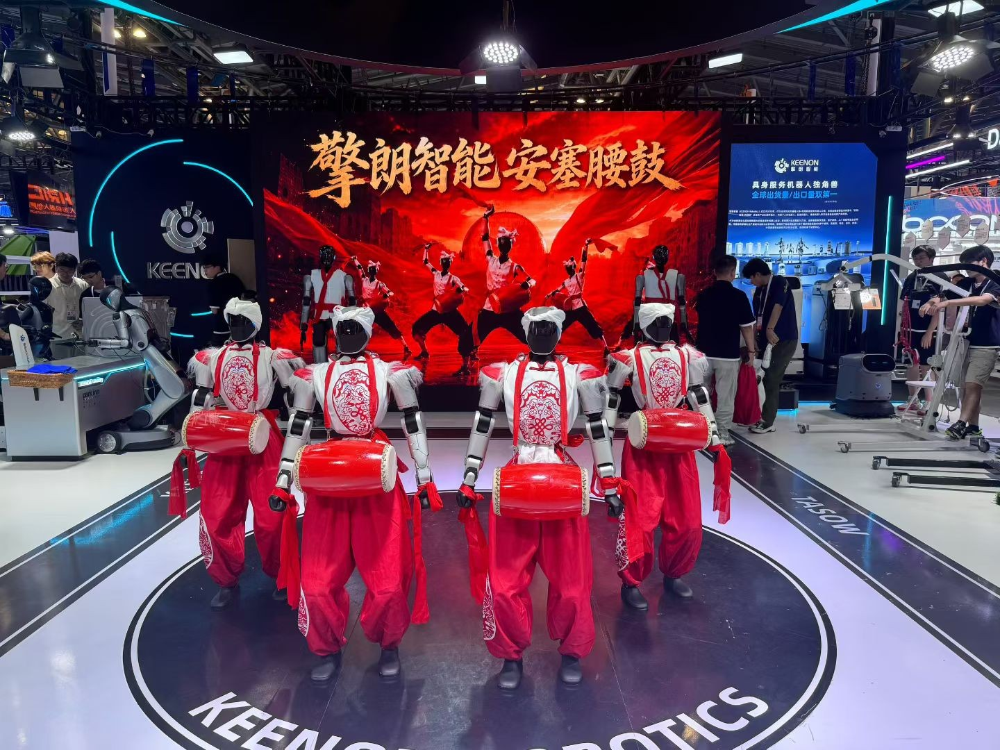

L1 人形机器人 · 展会现场
项目实机展示
L1 全身运动控制
舞蹈表演 · 多机协同 · 躺下起身
项目展示
项目作品.
从训练过程，到真实表现。
19 段视频 · 6 个项目方向
01实机验证
L1 人形机器人
全身动作模仿与实机部署
舞蹈、协同表演与躺下起身
面向自研 L1 人形机器人，参与从动捕采集、运动重定向、策略训练到真机部署的完整流程，实现长序列舞蹈及起身动作的稳定复现。
主要工作
- 基于 GMR 调整 IK 权重、关节限位等约束，处理足端漂移与动作抖动。
- 基于 BeyondMimic 优化奖励、课程学习与终止条件，并结合关节力矩分析迭代策略。
- 参与部署调试，完善状态机、异常检测、急停恢复及通信超时保护。
02实机验证
G1 人形机器人
G1 舞蹈动作迁移
重定向 → Isaac → MuJoCo → 实机
围绕 G1 人形机器人舞蹈动作，展示从动作重定向到强化学习训练、跨仿真器验证和真实机器人执行的完整技术链路。
主要工作
- GMR 将人体动作映射到机器人关节空间。
- 在 Isaac 仿真环境中进行策略训练，再迁移至 MuJoCo 验证。
- 通过实机演示观察动作跟踪与全身协调效果。
03实机 / 迁移验证
拟人运动控制
AMP 拟人行走与跑步
运动自然度 × 速度跟踪
基于 AMP_mjlab 适配 L1 拟人走跑框架，构建专家动作数据集，完成关节映射、运动学重建与数据预加载，并开展策略训练及真机部署。
主要工作
- 调优 AMP 判别器，平衡动作自然度与指令跟踪能力。
- 分析动作分布及指令采样偏差，排查高速偏航、转向不对称和横移耦合。
- 完成拟人走跑的实机部署；下方展示真实机器人执行与 跨仿真器迁移 验证。
04仿真演示
武术动作模仿
武术动作模仿学习
复杂动作序列的策略训练
基于 MimicKit 与 DeepMimic，清洗、对齐并预处理动捕数据，构建人形机器人运动数据集，通过奖励设计训练复杂武术动作。
主要工作
- 在 IsaacLab 中复现拳法、腿法等 5 类典型武术动作。
- 开展 MuJoCo 初步迁移验证，整理数据处理与训练调试文档。
05仿真演示
世界模型与运动控制
世界模型辅助运动控制
视觉观测与历史状态融合
面向 G1 复杂地形运动任务，引入 Dreamer 风格的 RSSM 世界模型，融合前向深度图、本体状态与历史动作，为控制策略提供时序特征。
主要工作
- 将世界模型特征、本体历史编码和速度指令共同输入策略。
- 基于 Leggedgym 构建并行环境，结合域随机化、地形课程与奖励课程训练。
- 利用仿真前向高度图与本体状态预测深度观测，降低相机渲染开销。
06仿真 / 实机项目
四足机器人视觉运控
Go2 敏捷运动与视觉部署
从状态表征到感知—决策—控制
研究基于时序对比学习的状态表征与多技能运动控制，并基于 rl_sar 二次开发视觉部署框架，将 RealSense D435i 深度感知接入 ROS2 控制链路。
主要工作
- 通过教师—学生表征学习，在部分可观测条件下恢复关键环境特征。
- 搭建 Gazebo 调试平台，接入观测、相机数据与实时控制指令。
- 开发手动及自动多技能切换模块，完成 Go2 真机部署。
个人经历
关于我.
从算法训练，
走向工程落地。
我是浙江工业大学控制工程硕士研究生，预计于 2027 年 6 月毕业，本科毕业于杭州电子科技大学自动化专业。研究方向为基于深度强化学习的机器人运动控制，重点关注人形机器人全身动作模仿、拟人步态和策略实机部署。
在企业实习与实验室项目中，参与 L1、G1 人形机器人和 Go2 四足机器人的运动控制开发，实践覆盖动捕数据处理、运动重定向、仿真训练、跨仿真器验证与部署调试。项目任务包括舞蹈与起身、拟人走跑、武术模仿以及复杂地形运动。
教育背景
浙江工业大学
控制工程 · 硕士 2024.09—2027.06
杭州电子科技大学
自动化 · 学士 2019.09—2023.06
上海擎朗智能科技股份有限公司
强化学习算法实习生
参与自研 L1 人形机器人的全身动作模仿开发，基于 GMR 与 BeyondMimic 完成重定向、训练及真机部署调试；适配 AMP 拟人走跑框架，排查步态偏航、转向不对称等问题，并完善部署侧状态机与安全保护。
杭州金视线科技有限公司
人形机器人工程师实习生
基于 MimicKit 与 DeepMimic 开展武术动作模仿学习，负责动捕数据清洗、对齐和奖励设计。在 IsaacLab 中复现拳法、腿法等 5 类典型动作，并开展 MuJoCo 迁移验证与技术文档整理。
杭擎智能（杭州）有限公司
机器人运控算法实习生
面向 G1 复杂地形任务开展 AMP 策略训练，引入 Dreamer 风格的 RSSM 世界模型融合深度观测与历史状态；结合地形课程、奖励课程和域随机化进行训练，并完成 MuJoCo 验证。
荣誉与证书
浙江省政府奖学金 · 一等奖学金 2 次 · 优秀毕业生 · CET-6
动作数据处理
基于 GMR 进行运动重定向，处理关节映射、关节限位与足端漂移问题，构建适用于动作模仿和 AMP 训练的专家数据集。
策略训练与调优
围绕奖励函数、课程学习、终止条件与判别器开展调优，结合关节力矩曲线、动作分布和指令采样定位运动控制问题。
感知与实机部署
使用 Python、C++ 与 ROS2 开展工程开发，将 D435i 深度感知接入 rl_sar，参与多技能切换、状态机保护及机器人实机调试。
联系我
欢迎交流岗位机会与技术方向。
2027 届秋招 · 强化学习 / 机器人运动控制